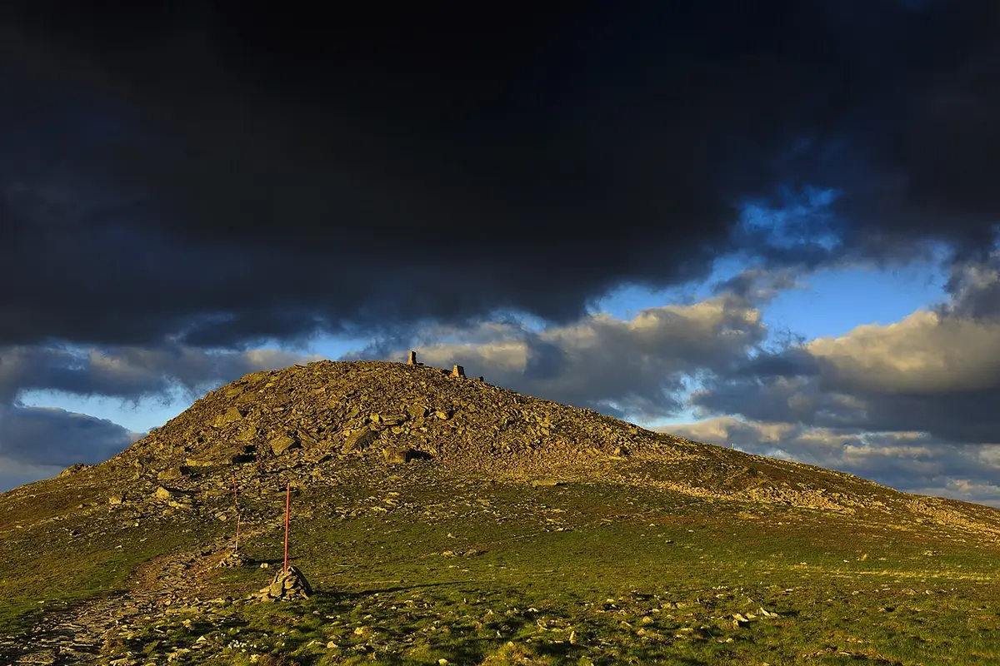

Przewodnik po Koronie Gór Polski
Co obejmuje Korona Gór Polski?
Najkrótsza odpowiedź brzmi: 28 szczytów. Oficjalny wykaz Klubu Zdobywców Korony Gór Polski obejmuje najwyższe szczyty głównych pasm górskich Polski. W tabeli poniżej zachowuję kolejność i wysokości z wykazu Klubu — od Łysicy (612 m) do Rysów (2499 m). To ważne, bo w górach spotkasz różne pomiary, nazwy wierzchołków i spory geodezyjne; dla planowania KGP punktem odniesienia jest konkretny, oficjalny wykaz.
Nie myl dwóch rzeczy: wejście na szczyt może być prywatnym celem każdego turysty, natomiast oficjalna Godność Zdobywcy KGP wymaga procedury Klubu, Książeczki i późniejszej weryfikacji. Zasady mogą się zmieniać, dlatego przed rozpoczęciem projektu sprawdź aktualny regulamin Klubu.

Pełna lista 28 szczytów KGP
Poniższa tabela jest bazą do planowania. Wysokości i przypisanie pasm pochodzą z oficjalnego wykazu KGP; linki w ostatniej kolumnie prowadzą do istniejących wpisów W Dobrym Kierunku, jeśli dany szczyt został już opisany.
Na telefonie przesuń tabelę poziomo, aby zobaczyć wszystkie kolumny.
| # | Pasmo | Szczyt | Wysokość | Na stronie |
|---|---|---|---|---|
| 1 | Góry Świętokrzyskie | Łysica | 612 m | — |
| 2 | Masyw Ślęży | Ślęża | 718 m | — |
| 3 | Góry Kaczawskie | Skopiec | 721 m | — |
| 4 | Góry Bardzkie | Kłodzka Góra | 757 m | — |
| 5 | Góry Wałbrzyskie | Chełmiec | 851 m | — |
| 6 | Góry Opawskie | Biskupia Kopa | 890 m | — |
| 7 | Beskid Makowski | Lubomir | 904 m | — |
| 8 | Góry Stołowe | Szczeliniec Wielki | 919 m | — |
| 9 | Beskid Mały | Czupel | 930 m | — |
| 10 | Góry Kamienne | Waligóra | 934 m | — |
| 11 | Rudawy Janowickie | Skalnik | 945 m | — |
| 12 | Góry Bystrzyckie | Jagodna | 977 m | — |
| 13 | Góry Złote | Kowadło | 989 m | — |
| 14 | Beskid Niski | Lackowa | 997 m | — |
| 15 | Góry Sowie | Wielka Sowa | 1015 m | — |
| 16 | Pieniny | Wysoka | 1050 m | — |
| 17 | Góry Orlickie | Orlica | 1084 m | — |
| 18 | Góry Bialskie | Rudawiec | 1106 m | — |
| 19 | Góry Izerskie | Wysoka Kopa | 1126 m | — |
| 20 | Beskid Wyspowy | Mogielica | 1171 m | — |
| 21 | Beskid Śląski | Skrzyczne | 1257 m | — |
| 22 | Beskid Sądecki | Radziejowa | 1262 m | — |
| 23 | Gorce | Turbacz | 1310 m | — |
| 24 | Bieszczady | Tarnica | 1346 m | — |
| 25 | Masyw Śnieżnika | Śnieżnik | 1425 m | — |
| 26 | Karkonosze | Śnieżka | 1603 m | odcinek o Śnieżce |
| 27 | Beskid Żywiecki | Babia Góra (Diablak) | 1725 m | odcinek o Babiej Górze |
| 28 | Tatry | Rysy | 2499 m | odcinek o Rysach |
Jak zaplanować zdobywanie 28 szczytów?
Nie musisz zaczynać od Rysów ani układać od razu całej listy. Rozsądny plan zaczyna się od szczytów, które pasują do pory roku, kondycji i logistyki. Najpierw zdecyduj, czy celem jest prywatne przejście wszystkich punktów, czy oficjalna klubowa weryfikacja — od tego zależy, kiedy dołączyć do Klubu i jak dokumentować wejścia.
Praktyczny arkusz dla każdego wejścia powinien zawierać: szczyt i pasmo, punkt startowy, trasę dojścia, dystans, sumę podejść, przewidywany czas, wariant zejścia, parking lub transport publiczny, źródło mapy, datę sprawdzenia komunikatu i wariant awaryjny. To właśnie te szczegóły decydują, czy lista 28 nazw zamienia się w realny, bezpieczny plan.
Książeczka, pieczątki i oficjalna weryfikacja
- Dołącz do Klubu, jeśli chcesz oficjalnej weryfikacji. Samo wejście na szczyt jest dostępne dla każdego, ale Klub liczy do procedury wejścia dokonane od daty rejestracji.
- Wpisuj daty. Każda strona dotycząca szczytu w Książeczce KGP powinna być uzupełniona datą zdobycia.
- Zrób papierowe zdjęcie na szczycie. Do weryfikacji nie wystarcza fotografia pokazana wyłącznie na telefonie.
- Zbieraj pieczątki, ale nie traktuj ich jako jedynego dowodu. Stempel może pochodzić ze szczytu, schroniska, obiektu noclegowego, muzeum albo punktu informacji; brak pieczątki trzeba opisać zgodnie z zasadami Klubu.
Szczegóły procedury i aktualne wymagania sprawdzaj w poradniku Książeczki KGP oraz na stronie jak zdobyć Koronę Gór Polski.
Odcinki W Dobrym Kierunku związane z KGP
Na stronie są już materiały o trzech koronnych szczytach. Każdy wpis zawiera opis wariantów, liczby planistyczne, źródła, mapy, a tam gdzie są dostępne — także ślady GPX autora.
Bezpieczeństwo i aktualność tras
Korona Gór Polski nie jest jedną trasą ani zawodami. Największy błąd w planowaniu to traktowanie wszystkich 28 pozycji tak samo. Łysica, Skopiec czy część podejść sudeckich mogą być krótkimi wycieczkami, ale Rysy, Babia Góra, Śnieżka, Tarnica albo Lackowa wymagają odrębnej oceny pogody, czasu i terenu. Wysokość szczytu jest tylko jedną z informacji.
Przed wyjazdem sprawdź komunikat właściwego parku lub zarządcy, prognozę dla grani i transport. Dla odcinków związanych z istniejącymi wpisami przydatne są: TPN, BgPN, KPN oraz Bieszczadzki Park Narodowy. W razie przejścia po czeskiej lub słowackiej stronie sprawdź także komunikaty i zasady ratownictwa po drugiej stronie granicy.
Stan opracowania: lista KGP i zasady opisane tutaj zostały sprawdzone 27.09.2026. Komunikaty parków, remonty, sezonowe zamknięcia, ceny i transport są zmienne — przed wyjściem sprawdź je ponownie.
FAQ: Korona Gór Polski
Czym jest Korona Gór Polski i ile ma szczytów?
To oficjalny wykaz 28 najwyższych szczytów głównych pasm górskich Polski, prowadzony przez Klub Zdobywców Korony Gór Polski. W tym artykule korzystam z aktualnego wykazu Klubu, a nie z własnego rankingu geodezyjnego.
Czy trzeba zdobywać szczyty w określonej kolejności?
Nie. Kolejność zdobywania 28 szczytów jest dowolna i nie ma jednego obowiązkowego planu. Możesz zaczynać od gór najbliżej domu albo łączyć wejścia w regionalne wyjazdy.
Czy trzeba być członkiem Klubu, żeby wejść na szczyty?
Nie. Na wszystkie szczyty może wędrować każdy turysta. Jeśli chcesz oficjalnej klubowej weryfikacji i Godności Zdobywcy, trzeba wcześniej przystąpić do Klubu; do weryfikacji liczą się wejścia od daty rejestracji.
Jak potwierdzić wejście do oficjalnej weryfikacji?
W Książeczce KGP wpisujesz datę wejścia, dołączasz papierowe zdjęcie zdobywcy na szczycie i zbierasz pieczątkę. Gdy pieczątki nie da się zdobyć, wejście trzeba szczegółowo opisać, ale papierowe zdjęcie nadal jest potrzebne.
Ile mam czasu na zdobycie Korony Gór Polski?
Nie ma określonego limitu czasu. Szczyty możesz zdobywać we własnym tempie, dopasowując kolejność, sezon i długość wyjazdów do swoich możliwości.
Czy Giewont należy do Korony Gór Polski?
Nie. Oficjalny wykaz obejmuje Rysy jako szczyt Tatr. Giewont jest bardzo ważnym i wymagającym celem w Tatrach Zachodnich, dlatego odsyłam do osobnego wpisu, ale nie jest jednym z 28 szczytów KGP.
Źródła i materiały
Głównym źródłem listy, wysokości i zasad jest oficjalny wykaz Klubu Zdobywców Korony Gór Polski. Uzupełniająco wykorzystuję poradnik zdobywania KGP, poradnik Książeczki i regulamin Klubu. Linki do istniejących odcinków prowadzą do materiałów W Dobrym Kierunku; ich mapy, GPX i daty kontroli źródeł opisane są na odpowiednich podstronach.